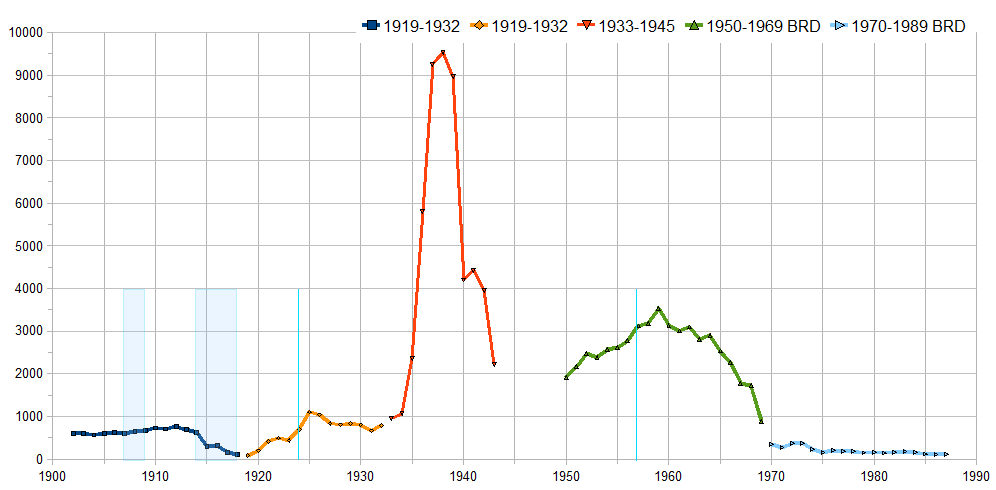
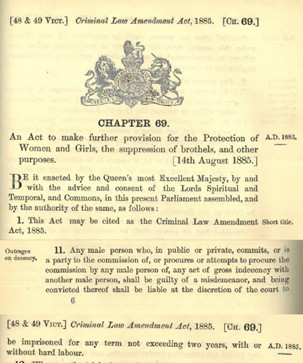

Legal repression played a crucial role in the persecution of the LGBTQ+ community during the 20th century,
as governments used laws to criminalize their identities.
Homosexuality was severely punished in many countries, with penalties ranging from fines and imprisonment
to forced labour and even death in some cases. As a result, people lived in constant fear and distress,
often forced to hide their identities to avoid arrest or being socialy excluded. Although discrimination
against the LGBTQ+ community has existed for centuries, the 20th century marked a period in which these
attitudes were reinforced through legal systems.

For example, in 1934, the German Criminal Code: Paragraph 175, was enforced. It aimed to criminalize sexual acts between males, which resulted in the imprisonment of almost 100.000 men who were mainly deported to concentration camps or imprisoned. In total, around 140.000 men were convicted until its abolition in 1994.
The repressions were also present in countries such as the United Kingdom with the Labouchère Amendment, who in 1885 criminalized “gross indecency” between men, allowing authorities to prosecute a big range of behaviours. This law remained in force well into the 20th century and led to the arrest and conviction of thousands of men. The Criminal Law Amendment Bill had proposed to criminalise sexual activity between women in 1921, but the law was rejected due to the government categorising lesbianism as not an “urgent problem”, and therefore the law was not applied.